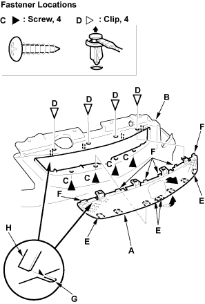

- Remove the front bumper, refer to the 2001 Civic Shop Manual Supplement, P/N 62S5A21 (see page 20-8).
- Remove the front grille (A). Take care not to scratch the front bumper (B).
- Remove the screws (C).
- Remove the clips (D).
- Release the bottom hooks (E) of the grille.
- Pull out the bottom of the grille to release the upper hooks (F).
- Pull out the grille to release the slits (G) from the ribs (H), then remove the grille.

- Install the grille in the reverse order of removal, and replace any damaged clips.
- Reinstall the front bumper.